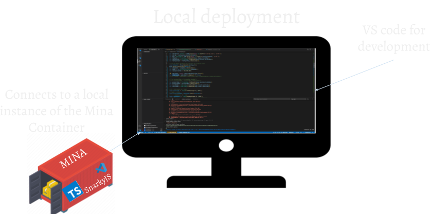
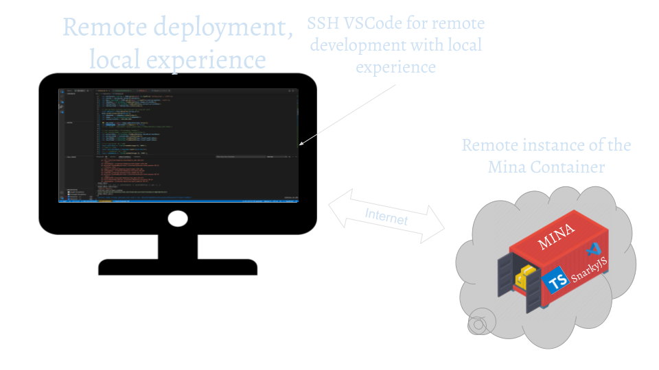
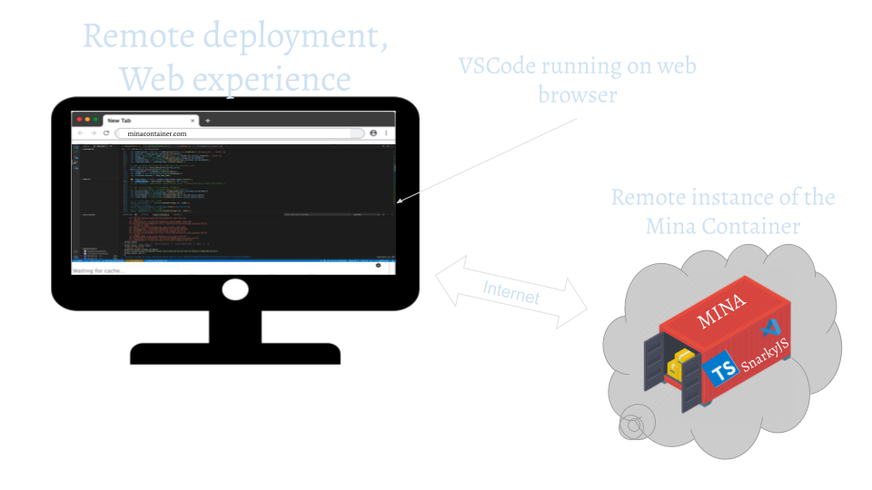

MDC PROJECT MODES
-
Local development, Local execution
By leveraging local container execution, MDC eliminates the need for complex setup or reliance on external infrastructure. It creates a self-contained environment that encapsulates all the necessary software tools and dependencies, ensuring consistency and portability across different development environments.
With MDC, you can easily spin up and manage containers locally, allowing you to compile, deploy, and run your Mina's ZKApps with ease. The local container execution provides a secure and isolated workspace, enabling you to experiment, test, and iterate on your projects without impacting your local system.
READ MORE >>
 -
Local development, Remote execution
The Mina Developer Container (MDC) offers a seamless development experience by combining the convenience of local development with the power of remote deployment. With MDC, you can effortlessly build and test Mina's ZKApps locally while deploying them remotely.
Using MDC in a remote deployment scenario involves developing your applications within the container environment on your local machine. This allows you to leverage the full suite of software tools and dependencies provided by MDC, ensuring consistency and ease of development. You can write, compile, and test your code within the container, enjoying a smooth and efficient workflow.
READ MORE >>
 -
Remote development, Remote execution
The Mina Developer Container (MDC) revolutionizes the remote deployment experience by providing a user-friendly web interface for developing Mina's ZKApps. With MDC, you can seamlessly build, test, and deploy your applications remotely using an intuitive web-based development environment.
When using MDC for remote deployment with a web interface, you can access the containerized development environment through a browser. The web interface provides a familiar and interactive coding environment, complete with all the necessary software tools and libraries at your fingertips.
Through the web interface, you can write, edit, and debug your Mina's ZKApps with ease. The containerized environment ensures consistency and compatibility, eliminating any worries about differing configurations or dependencies between your local machine and the remote deployment infrastructure.
You can deploy MDC directly using the link below:

READ MORE >>
